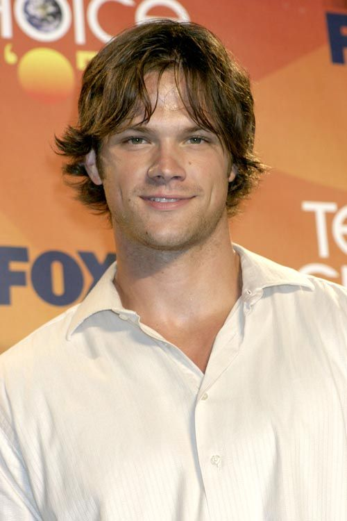

Dean Winchester
Dean é o irmão mais velho de Sam e é um caçador experiente de criaturas sobrenaturais.
Um site para falar sobre a serie
Supernatural é uma serie de terror e comedia
historia é de dois irmãos que caçam monstros e demônios e procuram o pai que desapareceu a muito tempo
Dean é o irmão mais velho de Sam e é um caçador experiente de criaturas sobrenaturais.

Sam é o irmão mais novo de Dean e também é um caçador de criaturas sobrenaturais.
John é o pai dos irmãos Winchester e um caçador experiente de criaturas sobrenaturais.
| Temporada | Ano de Lançamento | Número de Episódios |
|---|---|---|
| ...1... | ...2005-2006... | ...22... |
| ...2... | ...2006-2007... | ...22... |
| ...3... | ...2007-2008... | ...16... |
| ...4... | ...2008-2009... | ...22... |
| ...6... | ...2010-2011... | ...22... |
| ...7... | ...2011-2012... | ...23... |
| ...8... | ...2012-2013... | ...23... |
| ...9... | ...2013-2014... | ...23... |
| ...10... | ...2014-2015... | ...23... |
| ...11... | ...2015-2016... | ...23... |
| ...12... | ...2016-2017... | ...23... |
| ...13... | ...2017-2018... | ...23... |
| ...14... | ...2018-2019... | ...20... |
| ...15... | ...2019-2020... | ...20... |